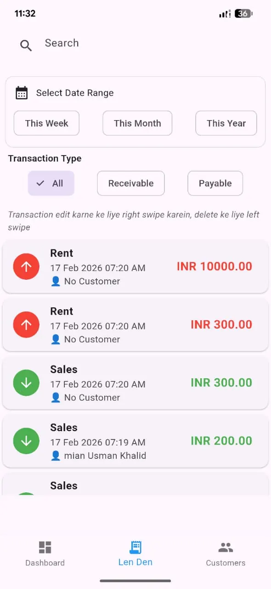

HisabDo: Khata & Ledger
Manage Khata, Udhar, Expenses, Receivables & Customers with a powerful offline-first digital ledger — built for shopkeepers, freelancers & small businesses.
🔒 Offline First • 📄 PDF Reports • ☁ Backup & Restore


Replace Your Paper Khata With a Smarter System
HisabDo is designed to replace traditional paper registers with a modern, organized digital ledger. Core records work locally on your device, and optional signed-in features can support backup or sync when you choose to use them.
- Track money given and received in real time
- Manage customers and their complete history
- Export professional PDF reports anytime
- Works fully offline — no internet needed

Everything You Need
A complete toolkit for managing your business finances — offline, secure and easy to use.
Khata & Ledger
Track every transaction — money given and received — with detailed records.
Customer Management
Add customers, manage balances and view complete financial histories.
Analytics
Visual insights into business performance.
Understand your business performance with clear visual insights.
PDF Export
Create professional reports and transaction statements instantly.
Voice Entry
Quick transaction entry using voice input.
Create records faster with built-in voice input support.
Backup & Restore
Protect your business records and restore them anytime.
Application Screens
Dashboard
Overview of balances and daily activity.

Customers
Customer records and outstanding balances.

Transactions
Review money received, paid and recorded.

Analytics

Ledger
Detailed customer and transaction history.

Voice Entry
Quick transaction entry using voice input.
Why Choose HisabDo?
🔒 Offline First
Core features work without internet, which helps in low-connectivity environments.
📄 PDF Export
Create professional reports instantly.
☁ Backup & Restore
Protect important business records.
🌍 Multi Language
Urdu, English, Hindi, Arabic & Roman Urdu.
💱 Multi Currency
PKR, USD and INR support.
🎤 Voice Entry
Create records faster using voice support.
Meet The Founder

Mian Usman Khalid
Software Engineer • Entrepreneur • Youth Leader
Founder & CEO of HisabDo, focused on building practical technology solutions for businesses and individuals across Pakistan and beyond.
View Full Profile
Practical Tools for Shopkeepers, Freelancers & Small Business Owners
A simple way to track khata, expenses, customers and receivables without relying on a complicated setup.
Daily khata tracking
Useful for shopkeepers who want a more organized record of payments, dues and balances without relying entirely on paper.
Freelance expense tracking
Helpful for freelancers who need a simple way to record income, expenses and client balances in one place.
Small business recordkeeping
Supports day-to-day tracking for businesses that want cleaner records and faster statement sharing.
Frequently Asked Questions
Is HisabDo free to use?
Yes. The app is available as a free download and is designed to help individuals and business owners manage everyday finances without unnecessary friction.
Does it work without the internet?
Absolutely. HisabDo is built to work offline so your records stay available even in low-connectivity situations.
Can I export reports?
Yes. You can generate PDF reports for transactions, balances and customer activity when you need a professional record.
Who Should Use HisabDo?
How It Works
1. Add Customers
Start by creating customer profiles and keeping their dues organized from day one.
2. Record Transactions
Track money given, money received, expenses and balances in a simple journal flow.
3. Export Reports
Generate clean PDF summaries whenever you need a business-ready record or statement.
4. Stay Secure
Protect sensitive financial data locally and restore it whenever needed with trusted backups.
Benefits at a Glance
Simple Daily Use
Designed for busy users who want a fast and practical tool for everyday money management.
Reliable Accounting
Create accurate records for receivables, payables and expenses without a complicated setup.
Privacy-Focused
Core records remain local by design, while optional backup or sync features depend on how you choose to use the app.
Portable Reports
Provide clear PDF reports to customers, suppliers and partners without manual formatting.
Latest Blog Posts
How to Manage Daily Khata
A practical guide for keeping your daily ledger accurate and easy to follow.
Read ArticleDigital Ledger vs Paper Ledger
Understand the advantages of switching from manual records to a smarter digital process.
Read ArticleExpense Tracking for Small Business
Learn how to capture daily spending, spot waste and improve cash flow with confidence.
Read ArticleApp Roadmap
Current Focus
Expanding offline reliability, backup quality and reporting for everyday business use.
Next Release
Improving visual summaries, invoicing workflows and bilingual reporting support.
Long-Term Vision
Building a more connected and user-friendly finance ecosystem for entrepreneurs across the region.
Built for Many Business Types
Trusted for Everyday Finance
Khata, Ledger & Finance Management Made Practical
Whether you run a small business in Pakistan, manage customer balances in India, or simply want better personal budgeting, HisabDo offers an easy way to track khata, ledger entries, expense activity, receivables and payables in one place.
Ready To Manage Your Finances Smarter?
Download HisabDo today — free, offline and built for your business.